30 Anos de História
Uma das bandas mais importantes e influentes do rock brasileiro.
Ouça no SpotifyDestaques
Formação
Fundada em Santos (SP) no ano de 1992.
Primeiro Álbum
Transpiração Contínua Prolongada (1997).
Último Álbum
La Familia 013 (2013).
Legado
Uma das maiores bandas da história do rock nacional.
Biografia
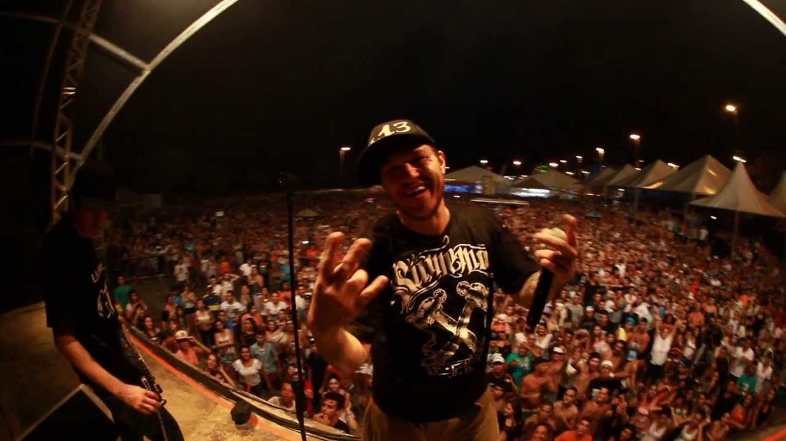
Charlie Brown Jr. foi uma banda brasileira de rock formada em 1992 na cidade de Santos, litoral de São Paulo. Liderada pelo vocalista Chorão, a banda se tornou uma das maiores referências do rock nacional, conquistando milhões de fãs em todo o país.
Origem do Nome
O nome da banda surgiu quando Chorão atropelou uma barraca de água de coco que possuía um desenho do personagem Charlie Brown. O "Jr." foi acrescentado porque os integrantes se consideravam filhos do rock.
Estilo Musical
Charlie Brown Jr. ficou conhecido por misturar diversos estilos musicais, como rock alternativo, hardcore, rap, reggae, ska e skate punk. Essa mistura criou uma identidade única que diferenciou a banda das demais do cenário brasileiro.
Influência Cultural
Além da música, a banda ajudou a popularizar a cultura do skate e o estilo de vida urbano entre os jovens brasileiros durante as décadas de 1990 e 2000. Suas letras abordavam temas como amizade, liberdade, superação e críticas sociais.
Principais Sucessos
Entre as músicas mais conhecidas da banda estão "Proibida Pra Mim", "Zóio de Lula", "Papo Reto", "Só os Loucos Sabem", "Dias de Luta, Dias de Glória" e "Céu Azul".
Legado
Durante sua trajetória, Charlie Brown Jr. lançou dez álbuns de estúdio, três álbuns ao vivo e diversos DVDs. Mesmo após o falecimento de Chorão em 2013, a banda continua sendo uma das mais importantes da história do rock brasileiro e sua influência permanece presente na música nacional.
Integrantes Clássicos
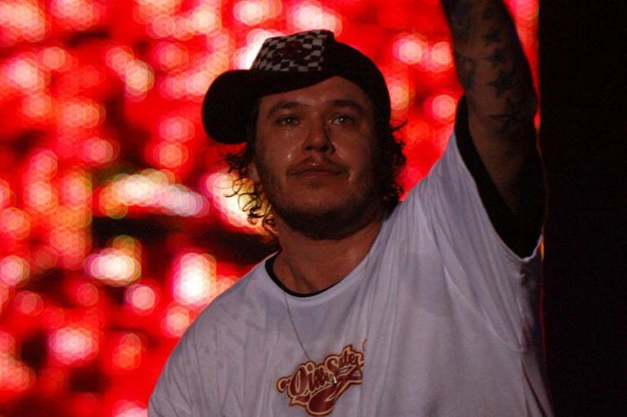
Chorão
Vocalista
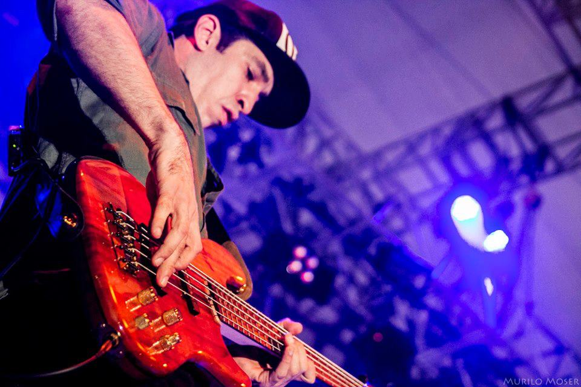
Champignon
Baixista
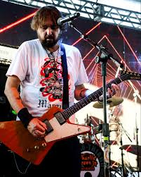
Marcão Britto
Guitarrista
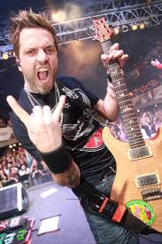
Thiago Castanho
Guitarrista
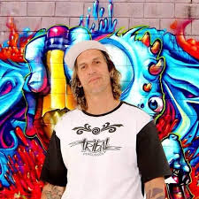
Renato Pelado
Baterista
Discografia
Ao longo de sua trajetória, entre 1997 e 2013, o Charlie Brown Jr. lançou 10 álbuns de estúdio e mais de 160 músicas, deixando um legado que continua influenciando gerações de fãs e artistas brasileiros. Aqui estão os 5 albúns que mais fizeram sucesso:
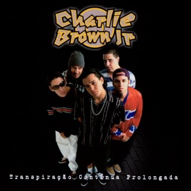
Transpiração Contínua Prolongada (1997)
- Tributo ao Frango da Malásia
- O Côro Vai Comê!
- Tudo que Ela Gosta de Escutar
- Sheik
- Hei! Arreia...
- Gimme o Anel
- Molengol's Groove
- Aquela Paz
- Quinta-Feira
- Proibida pra Mim
- Lombra
- Corra Vagabundo
- Falar, Falar...
- Festa
- Escalas Tropicais
- Charlie Brown Jr.
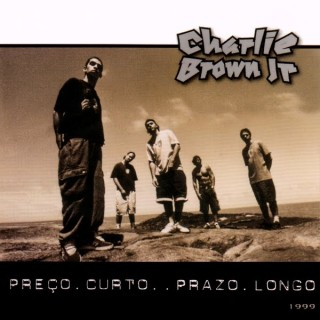
Preço Curto... Prazo Longo (1999)
- Confisco
- Zóio de Lula
- Resolve o Meu Problema Aí
- Te Levar
- O Que é da Casa, é da Casa
- O Preço
- Não Deixe o Mar Te Engolir
- Hoje de Noite
- Bons Aliados
- Puxa Carro
- União
- Aquele Velho Carteado e Algumas Manobrinhas
- 333
- Mantenha a Dúvida e Espere Até Ouvir Falar de Nós
- Do Surf
- História Mal Escrita
- Chicano
- A Grande Volta
- Cruzei Uma Doida
- 12+1
- Cidade Grande
- Local
- Muito Antes que Você
- Depois de Uma Bela Session...
- Deu Entrada pra Subir!
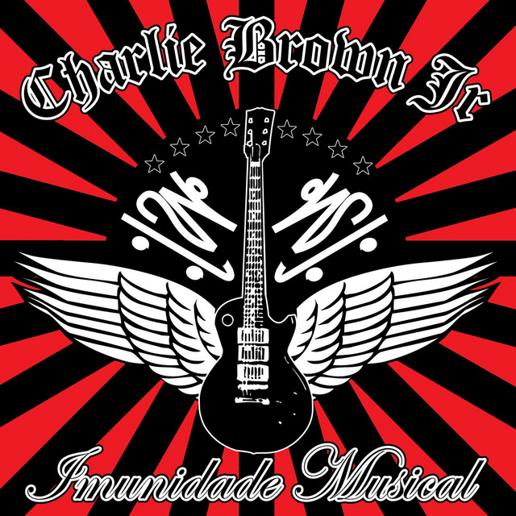
Imunidade Musical (2005)
- Too Fast to Live, Too Young to Die
- No Passo a Passo
- Lutar Pelo Que É Meu
- É Quente
- O Nosso Blues
- Onde Não Existe a Paz, Não Existe o Amor
- Ela Vai Voltar
- Outro Lugar
- Segue o Fluxo
- Dias de Luta, Dias de Glória
- O Que Ela Gosta de Escutar
- Green Goes
- Senhor do Tempo
- Surfar no Barco do Amor
- Pra Não Dizer Que Não Falei das Flores
- Abrir Seus Olhos
- Crime Bárbaro
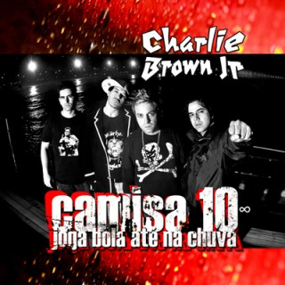
Camisa 10 Joga Bola Até na Chuva (2009)
- Dona do Meu Pensamento
- Me Encontra
- Só os Loucos Sabem
- Inabalavelmente
- O Dom, a Inteligência e a Palavra
- Os Cortes
- Uma Só Batida Que Move a Nação
- Viver Dias de Alegria e Dias de Dor
- Com os Pés no Chão
- Solitário Vagabundo
- Com a Cabeça Erguida
- O Submarino Verde e Amarelo
- Esse Rock É pra Você
- Hino do Santos Futebol Clube

La Familia 013 (2013)
- Um Dia a Gente Se Encontra
- Meu Novo Mundo
- Cheia de Vida
- Você Por Perto
- Vem Ser Minha
- Hoje Sou Eu Que Não Quero
- Camisa Preta
- Vou Me Embriagar De Você
- A Má Estação
- Rock Star
- Do Jeito Que Eu Quero, Do Jeito Que Eu Quase Preciso
- O Que Eu Gosto É Do Modo Como Você Move O Mundo
- Samba Triste
Galeria de Fotos
Confira alguns registros da trajetória do Charlie Brown Jr., incluindo shows, bastidores, ensaios e momentos marcantes da banda.
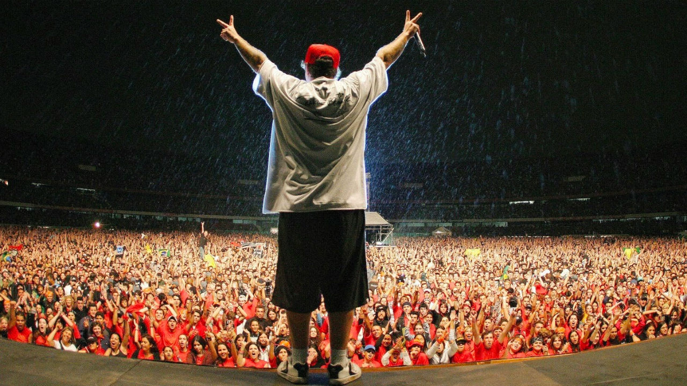

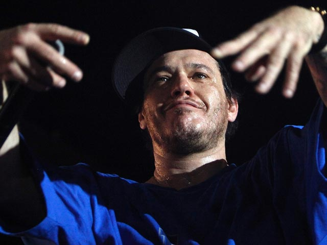
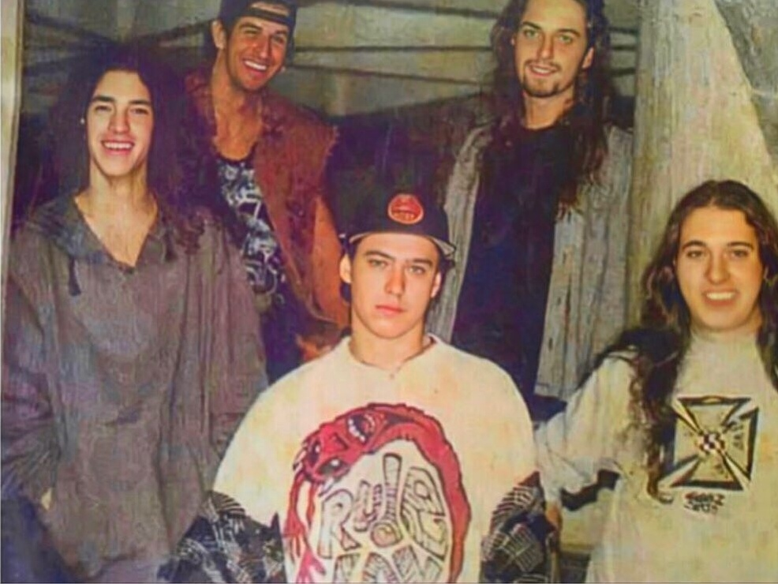
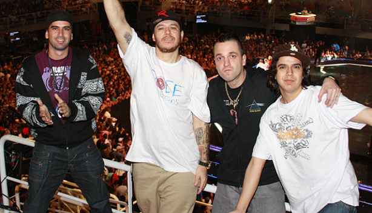
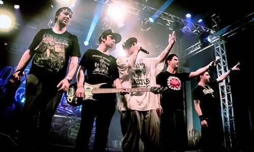
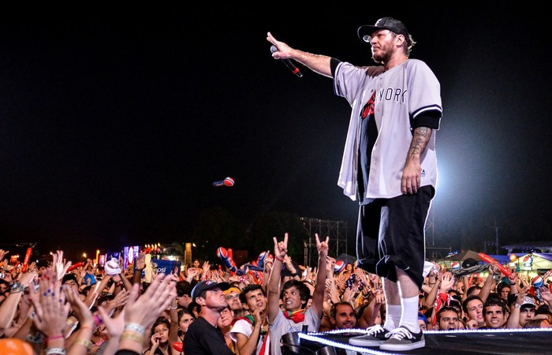
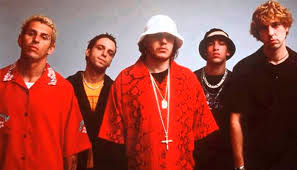
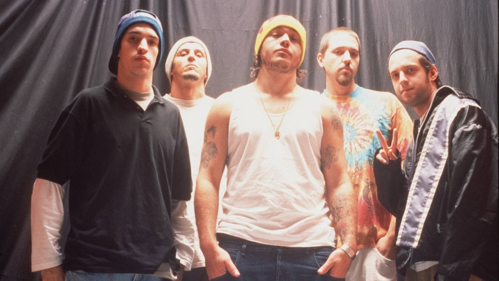
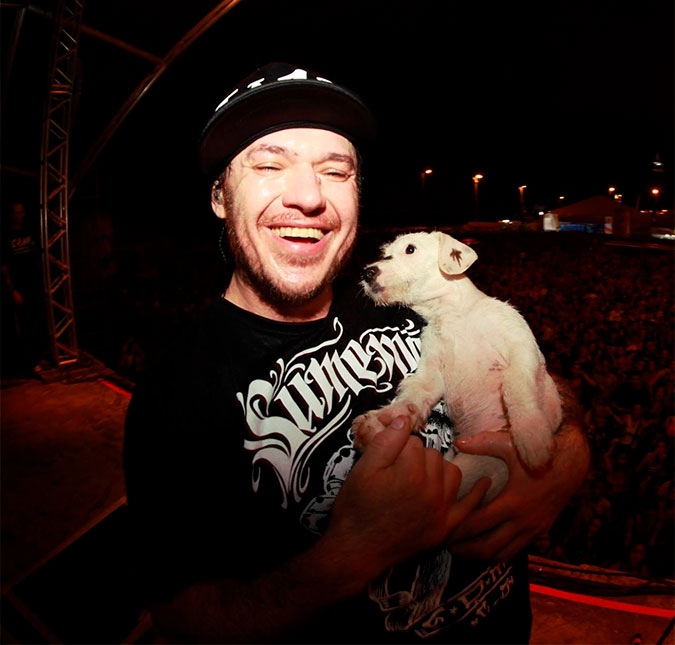
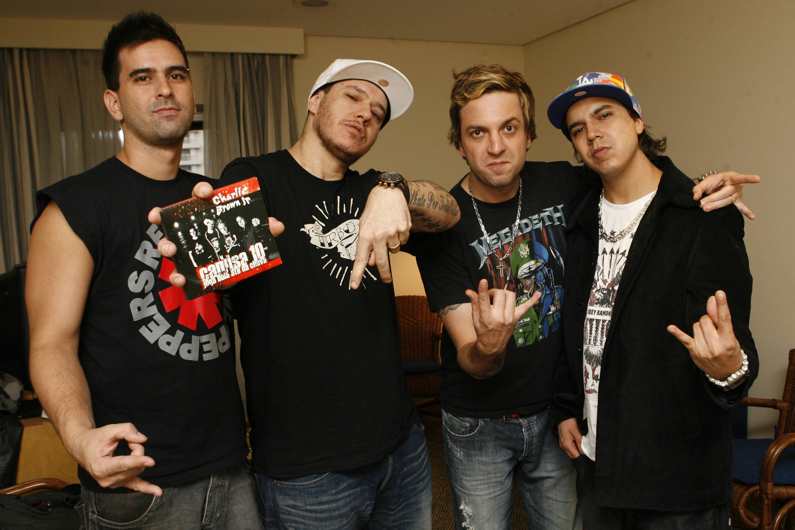
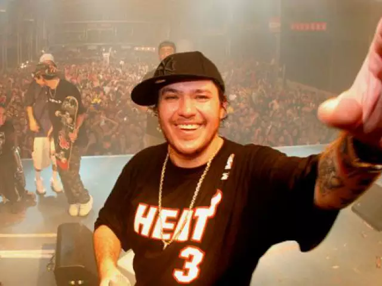
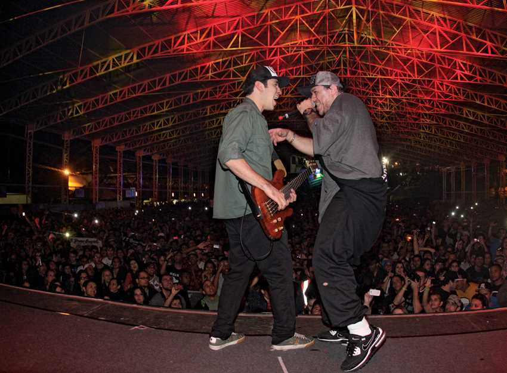
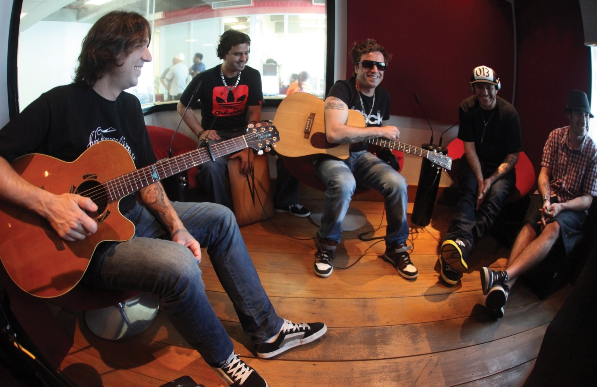
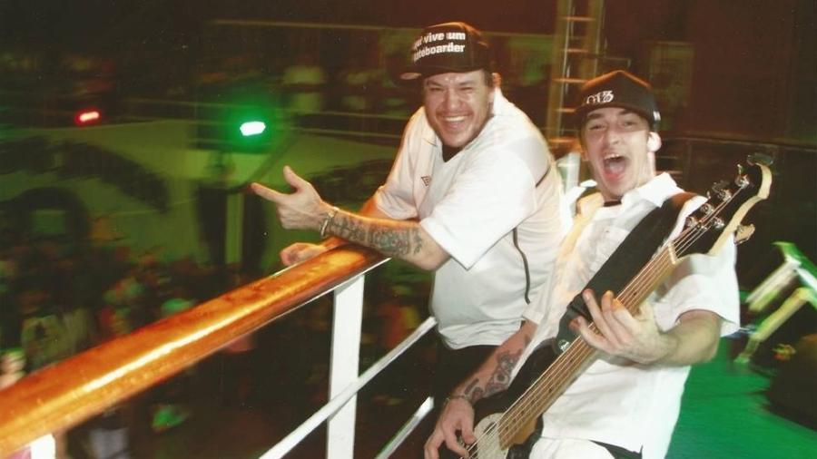
Notícias Recentes
Nova turnê acústica inspirada no Acústico MTV
Os guitarristas fundadores do Charlie Brown Jr., Marcão Britto e Thiago Castanho, decidiram resgatar uma das fases mais emblemáticas da carreira da banda: o formato desplugado. A nova turnê, batizada de "Thiago Castanho & Marcão Britto Charlie Brown Jr. Acústico", foi idealizada para celebrar o legado do grupo através de arranjos mais intimistas. Segundo os músicos, o objetivo não é apenas tocar os grandes hits que todo mundo já conhece, mas também trazer para os palcos canções do "Lado B" da discografia que raramente entravam nos shows elétricos. O projeto promete rodar os quatro cantos do país, oferecendo uma experiência nostálgica para os fãs órfãos do formato eternizado no álbum de 2003.
Rafael Carleto assume os vocais
Uma das maiores curiosidades do público era saber quem teria a responsabilidade de interpretar as letras de Chorão. O mistério acabou com o anúncio oficial de Rafael Carleto, natural de Apucarana, no Paraná. O cantor foi apresentado ao público em rede nacional durante o programa Caldeirão com Mion, na TV Globo. Carleto, que além de músico é empresário, foi escolhido por sua potência vocal e, principalmente, por sua conexão emocional com a obra do grupo. Marcão e Thiago enfatizaram que a escolha não visa substituir Chorão — algo que consideram impossível —, mas sim ter alguém que cante com o coração e respeite a história da banda, liderando o público em uma grande celebração.
Mudanças na formação
Nem tudo correu de forma linear nos preparativos para o novo projeto. Antes mesmo do primeiro show na estrada, a banda anunciou baixas importantes em sua cozinha rítmica. Os bateristas Bruno Graveto e André "Pinguim" Ruas, que gravaram álbils e fizeram turnês históricas com o CBJR original, decidiram deixar o projeto. O motivo da saída foi uma divergência técnica em relação ao formato do show. A ideia inicial era que os dois se revezassem entre a bateria e a percussão para se adequar à proposta acústica. Como o arranjo não funcionou como o esperado para os músicos, eles optaram por sair amigavelmente. Para assumir as baquetas nessa nova jornada, a banda convocou o baterista Filipe Costa.
Turnê passa por grandes festivais
A estreia oficial da turnê acústica aconteceu com ingressos esgotados na Audio, em São Paulo, mostrando que o público paulista continua fiel ao som de Santos. A partir dessa estreia, o grupo garantiu espaço nos line-ups de alguns dos maiores eventos de música do Brasil. Entre as datas confirmadas que devem atrair milhares de pessoas estão o tradicional festival João Rock, em Ribeirão Preto (SP), conhecido por celebrar o rock nacional; o Festival de Inverno, no Rio de Janeiro; a Festa Nacional do Pinhão, em Lages (SC); e o Rock Rec Festival, em Recife (PE). A maratona de shows comprova que o interesse pela obra do Charlie Brown Jr. atravessa gerações e fronteiras regionais.
Parceria entre Raimundos e Charlie Brown Jr.
Para além da turnê própria, os fãs do rock nacional dos anos 90 e 2000 ganharam mais um motivo para comemorar. O festival Doce Maravilha anunciou uma apresentação especial e exclusiva que vai unir integrantes e os repertórios das bandas Raimundos e Charlie Brown Jr. no mesmo palco. Esse show colaborativo promete misturar o peso e a irreverência do grupo brasiliense com o skate rock e as poesias urbanas da banda santista. O crossover está sendo apontado por críticos de música como um dos momentos mais aguardados do circuito de festivais, funcionando como um tributo vivo à era de ouro do rock brasileiro.
Documentário "Chorão: Marginal Alado" revela bastidores inéditos do Charlie Brown Jr.
Disponível em plataformas como Netflix e Prime Video, o documentário mergulha na história do Charlie Brown Jr. através de imagens de arquivo e fotos inéditas de estúdio. O filme revela os bastidores do auge criativo da banda nos anos 2000, mostrando as composições de madrugada, a rotina intensa de gravações comandada por Chorão e depoimentos de produtores da época, oferecendo aos fãs um olhar íntimo sobre como o grupo se tornou um fenômeno do rock nacional.